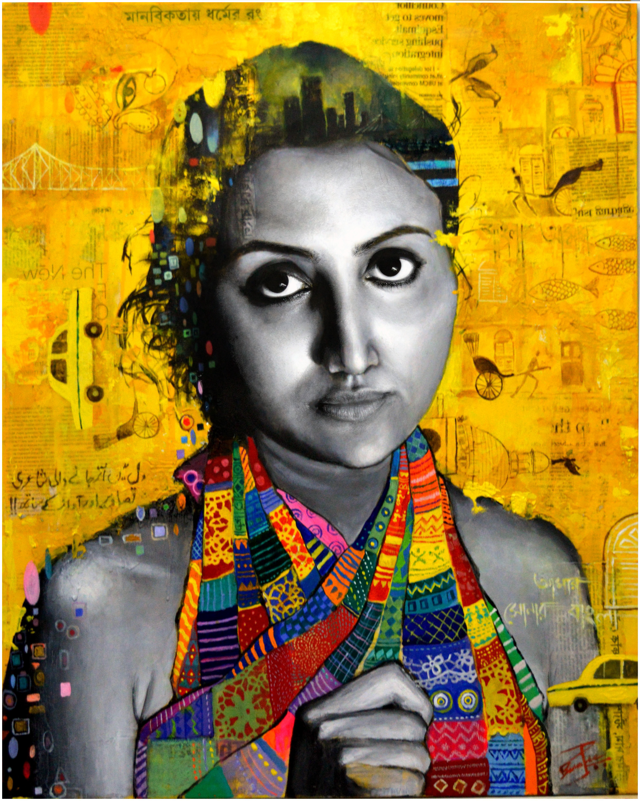

About me
Poulami Banerjee received her BFA at the University of Victoria. Her artistic practice primarily focuses on painting, photography, and installation, but she also works in other media such as sculpture, video, and performance depending on the scope of the project that she is dealing with. She was born and raised in India and the common thread that influences her practice is her political outlook, her self-awareness, and her concern for social justice that are all greatly influenced by her cultural history. The primary inspiration for her work always stems from her personal experiences.Poulami has a master's degree in Economics and she wants to implement her knowledge of economics and Statistics into her future projects. She likes to research the issues that concern her and explore them with different visual art mediums. The impetus for her artmaking is public awareness, questioning the norms and the traditions that are deeply rooted in her culture, and critically analyzing her identity. In this process, she always introspects and challenges her own ideological and political beliefs. She believes art can be a catalyst for change and growth, both personally and as a community. Poulami hopes her practice provokes dialogues among viewers by challenging their opinions, reflecting values, and translating their collective experiences.
Contact
pban0206 "at the rate"gmail"dot"comArtist Statement
Poulami Banerjee is originally from Kolkata, India. Currently, she is living in Langford, BC which is the traditional territory of the Lkwungen (Lekwungen) people. Her artistic practice primarily relies on painting, photography, installation and interdisciplinary approaches to create narrative. she also works in other media such as relational aesthetics, and performance depending on the scope of the project that she is dealing with. Her recent works investigate socio-political, economic, cultural, and psychological issues that are mostly driven by her own personal experiences. Currently, she is critically examining gender-related issues that are present in her culture. Gender inequality is a severe problem in her country. Although, during her adolescence she tried to fit into her milieu, now she feels confident enough to explore the gendered stereotypes that she experienced so strongly, from a critical perspective. Her works address the burning issues like gender stereotype, regressive attitude towards menstruation and marital rape which is still legal in her country.Poulami visited Sonagachhi, the largest redlight area in Asia for her recent project “Unholy Mothers”. The project consists of three parts. Being a new mom herself, Poulami had a chat on camera with a mother of three children who works as a sex-worker in the first part of the project. Poulami tried to bond with that other person on a personal level and emphasize on her identity as a mother, deliberately avoiding her professional life. The second part of the project captures her fulfilling motherly duties. In the third part the artist dissects the relationship between a sex worker mother and her child under the light of religious interpretations.
In her country, women’s education is often considered less important, yet the person whom people pray to for wisdom, knowledge, and education, is a woman and her name is Ma Saraswati. She examined this paradoxical social norm in her project Domestic Goddess. She recreated a historical painting of Goddess Saraswati on an unstretched canvas and used it as a tablecloth, and she served traditional Bengali food on it. Other than that, a significant amount of her recent works deals with grief, and mental illness in a cathartic manner. After losing many of her loved ones over the past few years, she has been struggling with these losses while being away from her home. In her project The Circle, uses she represented two of her harrowing experiences through drawing, sculpture and performance-based hybrid work. The work generated the discussion regarding PTSD that she suffers from. Through these works she explored her experience, but she also attempts create a visual space and language that allows viewers a place to contemplate their own experiences.
The common thread that influences her practice is her political standpoint, her emotional awareness, and her concern for social justice that are all greatly influenced by her cultural history. She often questions these issues with the help of vibrant colour palette, playful humorous tone and she often attempts to represent the grim questions in an aesthetically pleasing manner to draw viewers' attention. The impetus for her artmaking is public awareness, questioning the norms and the traditions that are deeply rooted in her culture, and critically analyzing her identity. In this process, she always introspects and challenges her own ideological and political beliefs. She believes art can be a catalyst for change and growth, both personally and as a community. Poulami hopes her practice provokes dialogues among viewers by challenging their opinions, reflecting values, and translating their collective experiences.